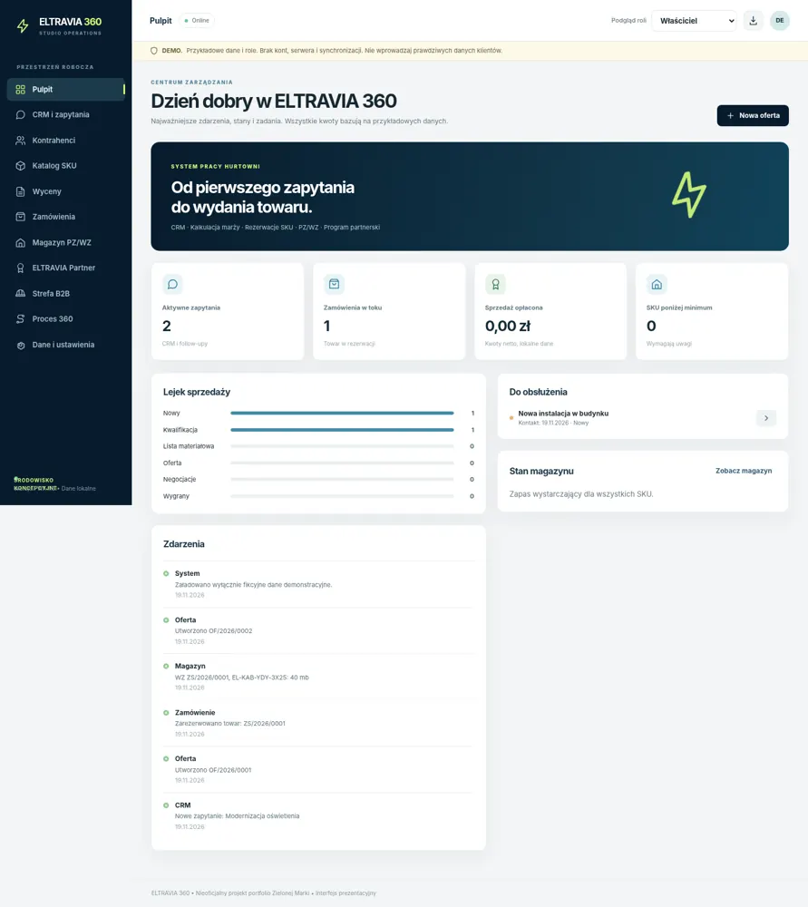
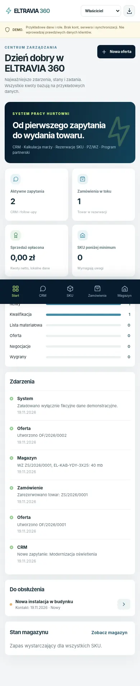

Od pierwszego kontaktu do kontroli kosztów.
Koncepcja hurtowni elektrotechnicznej: katalog, zapytania B2B, wyceny materiałowe, rezerwacje towaru, PZ/WZ i prognozy rentowności.
WWW, proces operacyjny i narzędzie do pracy
Każdy element ma osobny cel. Prezentacyjna witryna służy klientom, a PWA i workflow opisują obsługę operacyjną.
Oferta i kontakt
Katalog produktów, gazetka, strefa wykonawcy, kalkulator przewodów i kontakt.
Otwórz stronęProcesy i finanse
Cała ścieżka sprzedaży, zakupów, magazynu, limitów kupieckich, faktur, reklamacji i raportowania.
Pobierz dokument PDFPraca na komputerze i telefonie
CRM, wyceny, zamówienia, PZ/WZ, program partnerski oraz mobilny portal instalatora.
Uruchom aplikacjęDziałające moduły i granice wersji
PWA można otworzyć w przeglądarce i dodać do ekranu początkowego. W demonstracji dane są przechowywane lokalnie na urządzeniu. To nie jest wspólna baza produkcyjna.
Przebieg procesu
- Pozyskanie i kwalifikacja zapytań od instalatorów
- Wycena materiałów ze sprawdzeniem marży
- Potwierdzenie zamówienia i rezerwacja SKU
- Przyjęcie PZ i częściowe wydanie WZ
- Program ELTRAVIA Partner i historia aktywności
- Analiza kosztów i rentowności w Excelu
Interfejs desktop i mobile
Zrzuty z testowego wdrożenia. Przykładowe dane i stany są wyłącznie demonstracyjne.


Dokumenty i model finansowy
Wartości w arkuszu są scenariuszem szkoleniowym, a nie potwierdzonym wynikiem firmy.